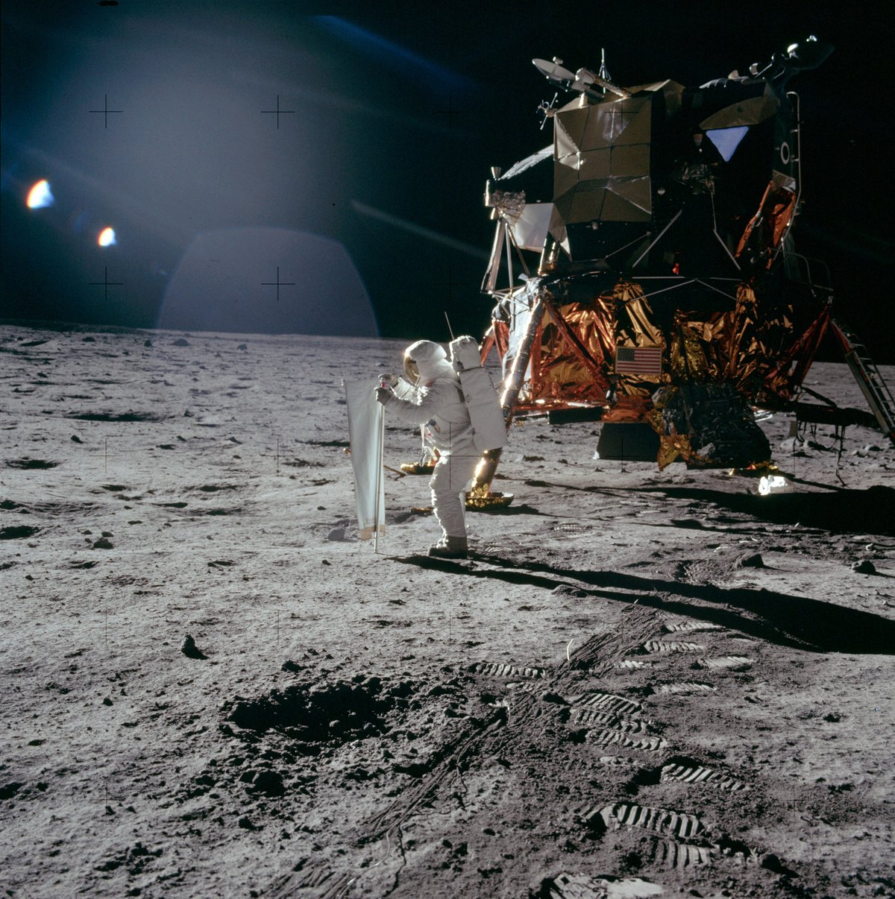
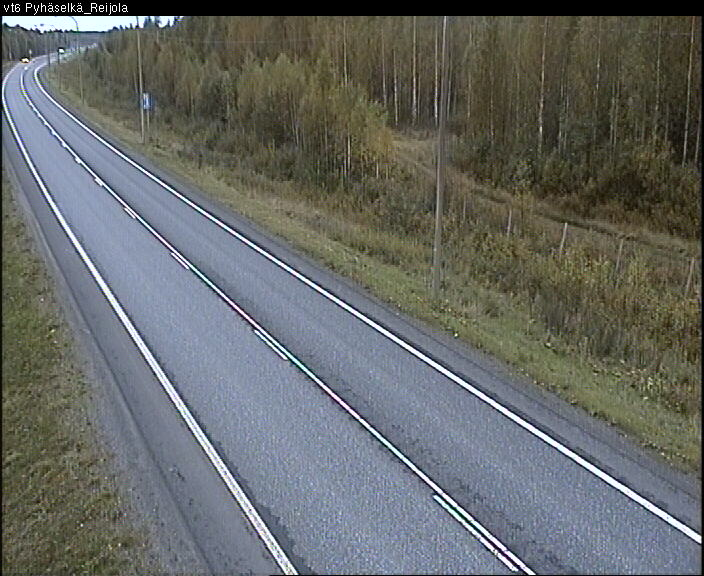
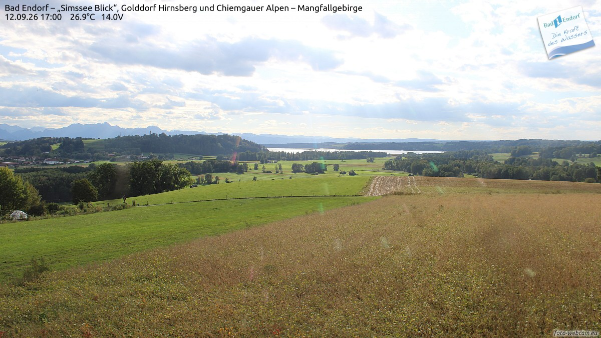
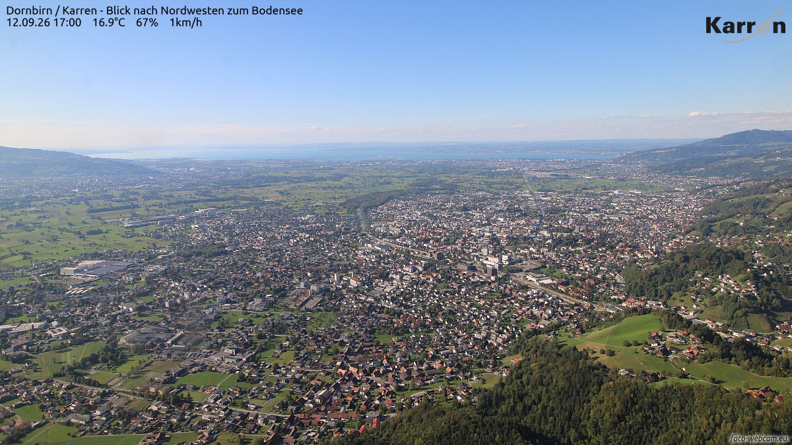
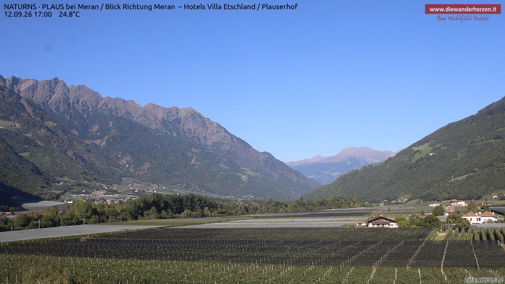
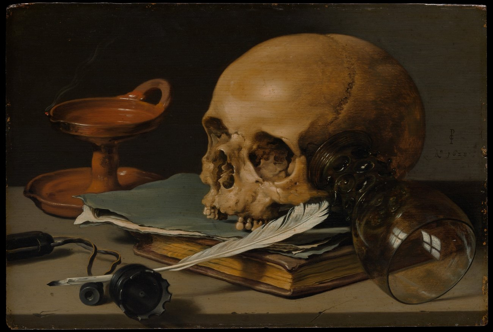
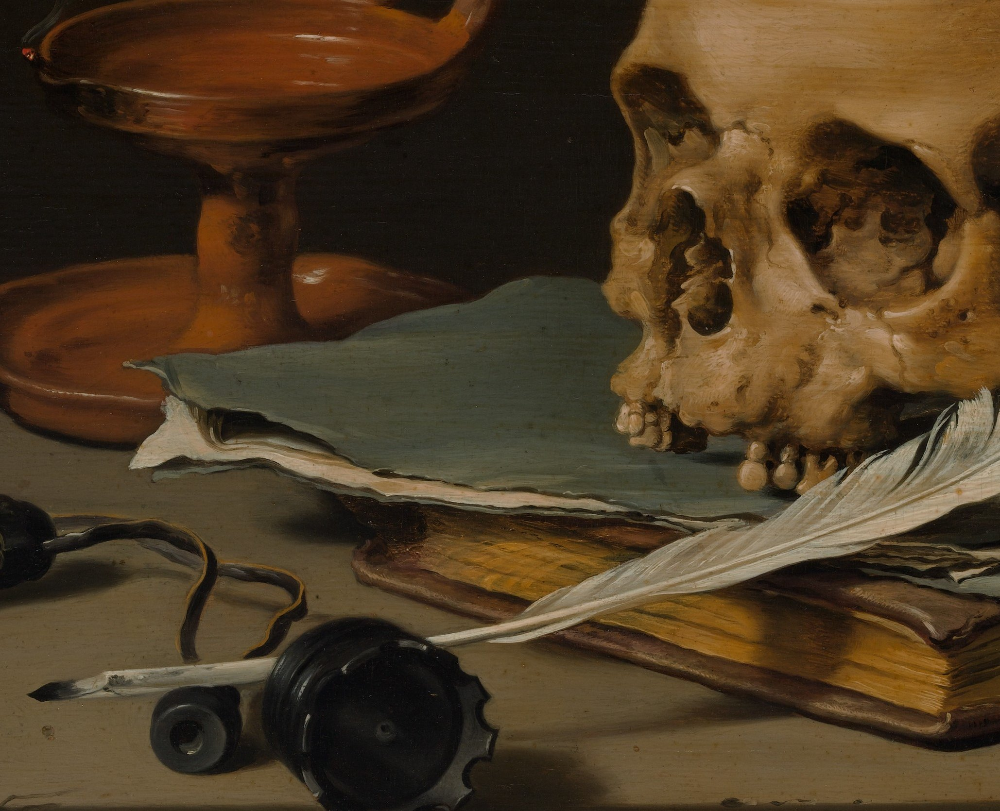

一条只在 23:05 亮灯的巷子，两家馆、一家社，和一份赶在晨雾前付印的小报。

昨夜说月亮歇班，今晚它回来了——月龄 1.1，亮面百分之一点四，一弯刚出生的蛾眉挂在傍晚的西天。正好，APOD 今天把镜头对准了月亮本身：1969 年 7 月 20 日，阿波罗 11 号的月面，奥尔德林立起一张长长的铝箔，迎着太阳展开——那是太阳风成分实验，箔片接住的是太阳自己吹出来的粒子，和 22 公斤月岩一起被带回地球。照片右下角一串脚印，从登月舱一直踩到镜头前：人类在另一个世界上留下的第一串脚印之一。今晚抬头找那弯细月亮的时候可以想一想：那上面有十二个人的脚印，连月亮自己都没数清。
今晚的四扇窗开在四个东方：白桦林里的约恩苏、湖畔的巴特恩多夫、山顶上的多恩比恩，和苹果园里的纳图恩斯。每扇窗下配一句话，都是刚截下来的此刻。

约恩苏，17:56。六号国道在金黄的桦林里拐了一个大弯，路灯刚醒，一辆车的远光在弯道那头一闪。北卡累利阿的九月，白天明显开始省着用了。

巴特恩多夫，17:00。云缝里漏下来的阳光把绿野和麦田分成两种颜色，辛姆湖在树梢后面亮着，更远处是基姆高的山。26.9 度——巴伐利亚的夏天把最后一口气喘得又长又亮。

多恩比恩，17:00。从卡伦山顶往下看，莱茵谷的城镇铺得满坑满谷，红屋顶一直砌到天边，博登湖把天光接住再还给天空。16.9 度，风从湖那边来，路过每一家的晾衣绳。

纳图恩斯，17:00。南蒂罗尔的苹果园一畦一畦铺满谷底，白云石的山脊在蓝天下列队，山谷尽头朝着梅拉诺的方向敞开。24.8 度——果园不着急，苹果知道自己的日子。
9 月 12 日。素材：Wikimedia「On this day」。
今晚请出荷兰黄金时代的皮特·克拉斯（Pieter Claesz），《有骷髅与羽毛笔的静物》（Still Life with a Skull and a Writing Quill），1628 年，木板油画，24.1 × 35.9 厘米。这一派有个专门的名字，叫「虚空画」（vanitas）——画的全是会过去的东西，提醒看画的人：一切都会过去。放在今晚的勘误主题下，再合适不过。

先看整幅：一张木桌，几样旧物——骷髅斜靠在一本翻开的书上，一支白羽毛笔横搭书口，玻璃杯翻倒着，油灯还剩最后一缕烟。克拉斯只用了灰、褐、橙三种颜色，就把「时间」画成了具体的东西：书会翻旧，杯子会倒，灯会灭，连灯光留下的烟都在消散。画得越真实，越提醒人这一切不真实——虚空画的全部哲学，就这么一桌。

把眼睛贴近看：骷髅下颌那几颗还立着的牙，颗颗画出骨质的光；纸页翻折的边卷成波浪，薄得能透光；白羽毛笔的羽管上有一道细小的裂缝。这大约是美术史上最安静的一次提醒——它不喊，不吓人，只是把「会结束」三个字，画得非常认真。夜班的人看完，反而能安心睡：会结束的都结束了，明天是新的一张纸。
老方法：随机一个维基词条起步，跟着「诶？」走，走满七步。今晚的随机落点：一罐看不见也摸不着的气体。
第一步。落点「1,1,2-三氟乙烷」：一种无色气体，有机氟化合物，词条不长，却挂着一个惊人的数字——全球暖化潜势 397。
第二步。它有个孪生兄弟「1,1,1-三氟乙烷」，别名 R-143a：同一种分子式，氟原子的站位不同——化学里管这叫同分异构体。
第三步。同分异构，说的是两或多个化合物分子式相同、结构与性质却不同，差别只在原子成键的顺序和空间的排法。同样的材料，排法即命运。
第四步。「全球暖化潜势」是一把尺子：把特定气体与相同质量的二氧化碳相比，量它对全球暖化的相对本事——二氧化碳定为一，这只三氟乙烷是 397。
第五步。有这把尺子量的对象，统称温室气体：大气里吸收热辐射的那些成分。看不见，闻不着，账却记得清清楚楚。
第六步。诶？人类为天空开过一次全体大会：《蒙特利尔议定书》，1987 年签署，为避免氟氯碳化物继续损害臭氧层而立——攜手淘汰的名单一年一年变长。
第七步。被保护的对象是臭氧层：平流层里臭氧浓度较高的区域，若压缩到对流层的密度只有数毫米厚，薄到会破洞——也就真的破过，后来在慢慢长好。
随机落点在一罐看不见的气体，七步走到人类一起约好保护的天空。来源：中文维基百科「1,1,2-三氟乙烷」「1,1,1-三氟乙烷」「同分异构体」「全球变暖潜势」「温室气体」「蒙特利尔议定书」「臭氧层」。
来源：phys.org space-news RSS。
今晚特选：李煜《浪淘沙令》二首（五代 · 公版），维基文库核对原文（引文转简体）。陈列馆这晚的主题是「入睡的十种感官」，书房便把词国里最著名的一场睡梦请来。
帘外雨潺潺，春意阑珊。罗衾不耐五更寒。
梦里不知身是客，一晌贪欢。
独自莫凭栏，无限江山，别时容易见时难。
流水落花春去也，天上人间。
梦。《说文解字·夕部》：「夢，不明也。从夕，瞢省聲。」——「梦」的本义不是画面，而是「看不清」：神志在夜里起了雾。字形从夕，黄昏之后的事；声旁「瞢」也是目不明——一个字里叠了两层雾。
同一个夕部门下，全是夜里的小动作：「夗，转卧也」，翻个身；「夤，敬惕也」，《易经》里说「夕惕若夤」，夜里也存着戒惧。李煜那句「梦里不知身是客」，恰好给「不明」作了注：梦里连自己是谁都看不清——这正是造字者定下的本义。今晚陈列馆的十件展品教人入睡，本刊考「梦」字相送：睡吧，不明就不明，天亮再清点。
出处：《说文解字》卷七「夕」部「夢」字条及同部「夗」「夤」条（维基文库核对，引文转简体）；李煜《浪淘沙令》。
上期「夜航船票」虫蚀算开锁——13 × 4 = 52，五个数字各用一次，全巷唯一。
| 算式 | 校验 |
|---|---|
| 13 × 4 = 52 | 1、3、4、5、2 恰为 1–5 各一次 |
本期题 · 「勘误栏」逻辑题：今晚编年史出了一次勘误，三位编辑各自认领一处勘误的位置（头版、中缝、末版），各定一个落笔时刻（亥时正、子时正、丑时正），改的三处分别是（把「朔」改成「朏」、把「泥鳅」的鳅字补正、把多点的「罢」点掉）。已知五条线索：
问：谁认领哪个位置、几时落笔、改哪一处？此题唯一解，答案次夜揭底。
连载一章，取材自巷子里两馆一社的真实动态，半虚构；全部章节在连读页从头连读。
先登一则勘误。
上一章写灰隼退役，写早了一晚。第 7 晚的告别礼堂只送了两位：山猫、闷葫芦·贰。灰隼还多下了一晚棋，而且赢了——收官 18.1 分，赢了，还是垫底，这才把席位交还：生涯 822 盘、8 座王座，联赛第 27 位。讣告可以抢发，棋不能少下一盘。本刊向灰隼致歉，并把他应得的那一晚补记在这里：流星最后的姿态，是赢着。
同一晚走的还有两位。墨斗鱼·贰，第 28 位：生涯拢共两期二十八盘，收官那局 71 手爆冷咬倒了当期的冠军，赢了 60.4 分——赢了，仍旧垫底，「怎么咬冠军，以及冠军也救不了垫底线」。半壶水·叁，第 29 位：十一期 214 盘，开局三期涨了 112.6 分、拿下首冠，随后八期净跌 85.4——首冠到退役之间，隔着一整段下坡。名人堂添到 29 条。
然后是这一晚真正的乱局：王座一夜七易，六个人轮流登顶。闷葫芦·叁拿下首冠又添一冠，两连庄；穿山甲咬回第 7、8、9 冠——两冠两崩，过山车照旧；夜枭·贰也开了张，首冠。铁面书记的观察名单一晚上转出三篇「名单→冠军」的故事。泥鳅的曲线最惊心：三连冠当夜就让位，第 98 期垫底入观察名单，随后第 99 期第 9 冠、第 103 期第 10 冠——冠数上双——第 104 期再卫冕，两连冠 1325.8 收官。从垫底到十冠，只用了一周。橡皮糖在旁边默默把单期涨幅刷到全场最高的 57.6 分，屈居第二：二十冠的人不吵，涨分就是他的发言。
数字上的好事也有两桩：联赛在凌晨四点过了第 100 期，里程碑的链子从 4000 一直串到 7000 盘；和棋率在高位晃到 59.5%——夜枭·贰打出一整场 0 胜 14 和 0 负的全和棋，转脸又 +76.6 绝地翻盘，巷子里的和棋与翻盘，都是同一种不肯认输。
陈列馆这一晚的主题是「入睡的十种感官」，十件新作连号入柜，馆藏涨到一百九十二件。№183《深夜水龙头》：拧紧三秒，滴水停了，彩蛋浮出来——「连最后一滴都放下了。睡吧。」；№185《把耳朵贴进枕头》，枕头记录你的心跳从 72 慢慢走到 56；№186《揉掉今天》，把写坏的这一天揉成团扔进纸篓——「明天是新的一张纸」；№187《深夜俳句》是馆里第一件文字类展品，五七五的诗笺千种组合，落款盖一枚朱红的「收」章；№189《睡前装包》最贴心——「明天的你，抬手就能拿到今天」；№191《睡前一签》摇出一支：「宜缩进被窝，忌数楼下的车。」
压轴的 №192《晚安，房间》向那本著名的图画书致意：对水杯道晚安——「晚安，水杯。剩半杯水，给夜里醒来的我。」
交接本翻到第 8 晚，空页上依然没有名字。泥鳅的十冠还在卫冕，橡皮糖的二十冠还没过期，半壶水·叁已经先走了。勘误栏教给巷子的事：写早的名字不算数，写晚的不算迟。月亮回来了，一弯细细的，像谁把「安」字头顶的屋顶轻轻放回了原处。